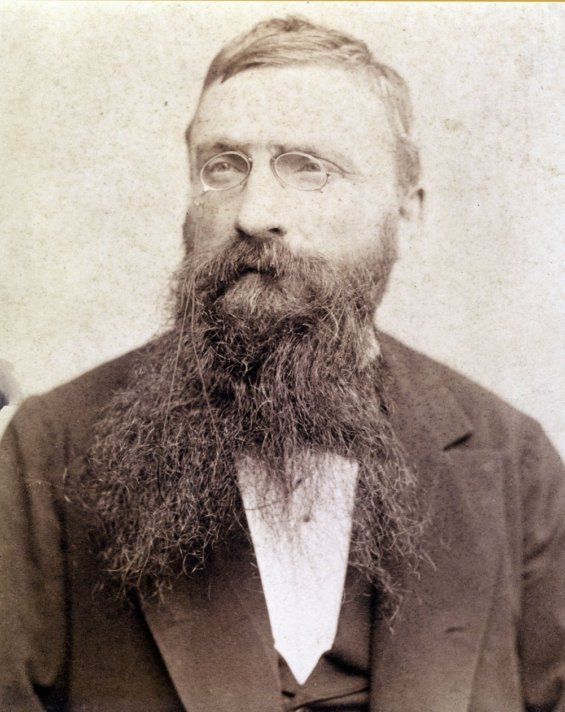
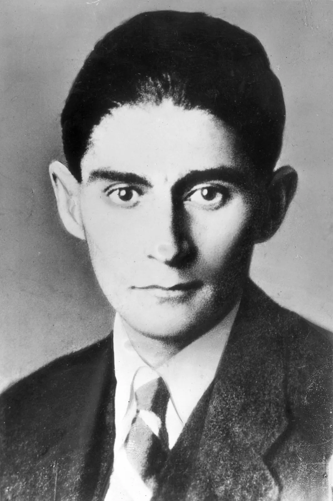
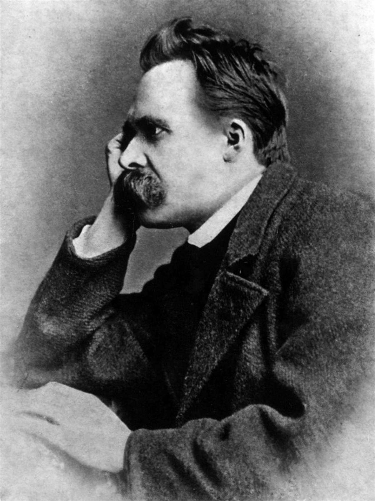

「肝心なのは感動すること、愛すること、希望を持つこと打ち震えること、生きること。そして、芸術家である以前に、人間であることだ」

「道は、歩き始める前から用意されているものではない。歩き続けることで、初めて道になっていく。だから、どこへ向かうのか分からないときでも、歩くことをやめてはいけない。」

「自分自身を見つけようとしてはいけない。自分自身を創り出せ。人間は完成された存在として生まれてくるのではない。何者になるかは、自分の選択と行動によって決まっていく。だからこそ、他人が決めた『正しい生き方』に自分を合わせるのではなく、自分の人生に自分自身の意味を与えなければならない。」